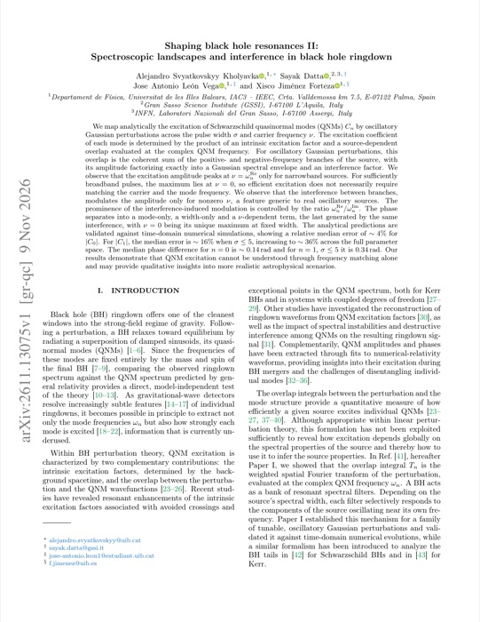
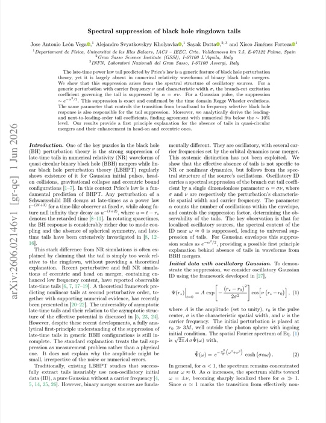
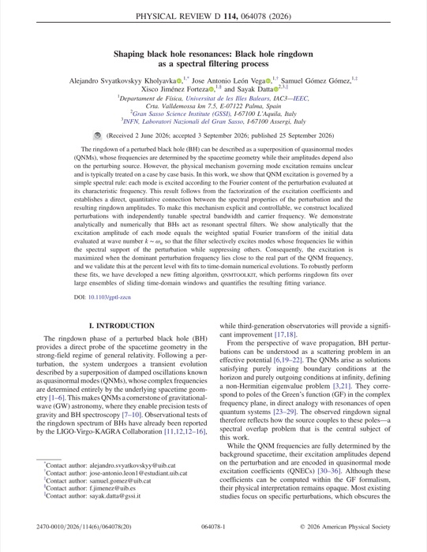
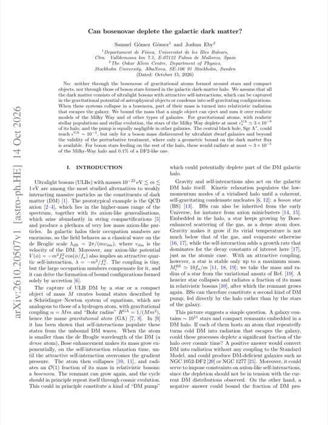
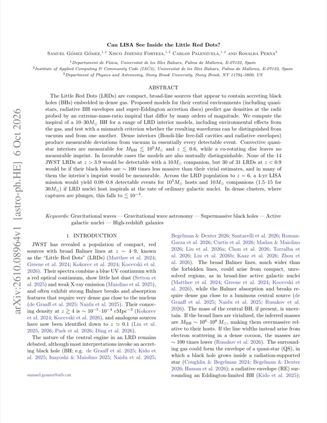
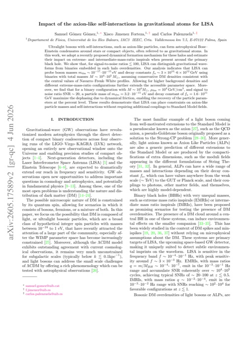
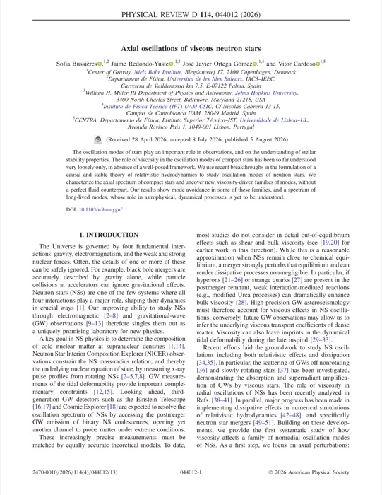

Preprint arXiv:2611.13075 · 2026
Papers

Preprint arXiv:2611.13075 · 2026

Preprint arXiv:2606.02146 · 2026

Published Phys. Rev. D 114, 064078 (2026)

Preprint arXiv:2610.20507 · 2026


Preprint arXiv:2605.17589 · 2026

Published Phys. Rev. D 114, 044012 (2026)
Full list of publications by group members on INSPIRE-HEP.